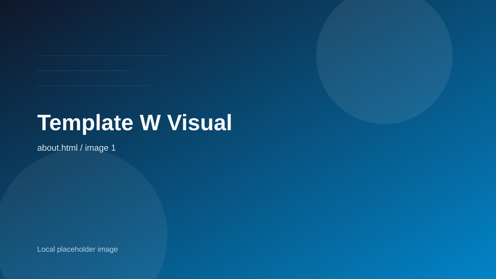

About
Designingthe horizonas memory.
Wide Horizon は、景色そのものよりも「その景色をどう体験するか」を設計するブランドです。視界の抜け、光の変化、滞在のリズムまで含めて、パノラマ体験を編集します。
Philosophy
余白の密度を、丁寧に上げる。
情報を詰め込むのではなく、感じ取れる余白を確保すること。それが私たちのラグジュアリー観です。
Principle 01
Silence
静けさそのものを価値として扱い、過剰な演出を避けます。
Principle 02
Scale
人の体感と風景のスケール差を、美しく見せる構図を選びます。
Framework
THREELAYERS
Layer 01
Arrival
最初の景色で気持ちが切り替わるかを、最重要視します。
Layer 02
Stay
滞在中の動線が風景を邪魔しないよう、行程を削ぎ落とします。
Layer 03
Afterglow
帰ったあとにも余韻が続くよう、言葉と記録の残し方を整えます。